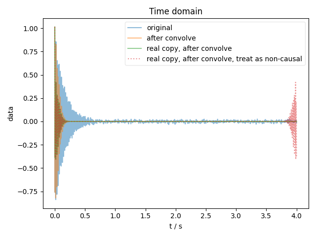
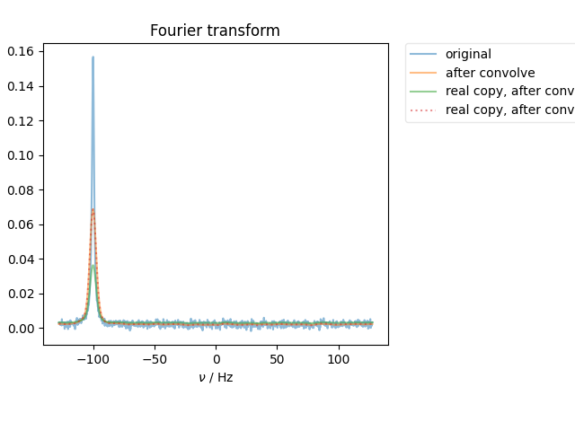

Note
Click here to download the full example code
Simple Convolution Example¶
Since we use convolution a bit for signal analysis, test it here.
This also demonstrates the point that, when performing convolution, it’s important to distinguish between signals that are “causal” (like an FID – consisting of real and imag that are Hermite transform pairs) vs. “non-causal” (e.g. take the real part or the energy of a causal signal, or analyze a noise PSD). We show the time-domain signal by way of explanation as to how these are treated differently.
- 
- 
c:\users\jmfranck\git_repos\pyspecdata\pyspecdata\core.py:2684: UserWarning: linestyle is redundantly defined by the 'linestyle' keyword argument and the fmt string ":" (-> linestyle=':'). The keyword argument will take precedence.
retval = myplotfunc(*plotargs,**kwargs)
c:\users\jmfranck\git_repos\pyspecdata\pyspecdata\core.py:2684: UserWarning: linestyle is redundantly defined by the 'linestyle' keyword argument and the fmt string ":" (-> linestyle=':'). The keyword argument will take precedence.
retval = myplotfunc(*plotargs,**kwargs)
c:\users\jmfranck\git_repos\pyspecdata\pyspecdata\core.py:2175: UserWarning: This figure includes Axes that are not compatible with tight_layout, so results might be incorrect.
plt.gcf().tight_layout()
from pylab import *
from pyspecdata import *
t = nddata(r_[0:4:1024j],'t').set_units('t','s')
signal = exp(-1j*2*pi*100*t-20*t/pi)
signal.add_noise(0.01)
with figlist_var() as fl:
fl.next('Time domain')
fl.plot(signal, label='original')
fl.next('Fourier transform', legend=True)
signal.ft('t', shift=True)
signal_real_copy = signal.real
signal_real_copy_noncausal = signal.real
fl.plot(signal, label='original')
signal.convolve('t',5)
signal_real_copy.convolve('t',5)
signal_real_copy_noncausal.convolve('t',5, enforce_causality=False)
fl.plot(signal, label='after convolve')
fl.plot(signal_real_copy, label='real copy, after convolve')
fl.plot(signal_real_copy_noncausal, ':', label='real copy, after convolve, treat as non-causal')
fl.next('Time domain')
signal.ift('t')
signal_real_copy.ift('t')
signal_real_copy_noncausal.ift('t')
fl.plot(signal, label='after convolve')
fl.plot(signal_real_copy, label='real copy, after convolve')
fl.plot(signal_real_copy_noncausal, ':', label='real copy, after convolve, treat as non-causal')
Total running time of the script: ( 0 minutes 0.192 seconds)